Volver a facturar gastos a los clientes¶
Es común que los empleados tengan que gastar su propio dinero al trabajar en un proyecto para un cliente.
Por ejemplo, si un empleado necesita viajar a donde está un cliente para trabajar en persona con él, es probable que tenga que usar su propio dinero para pagar por el hotel. Este es un gasto que la empresa debería volver a facturar al cliente, lo cual se puede hacer muy fácil con Odoo.
La aplicación Gastos¶
Para poder volver a facturar a un cliente por un gasto es necesario instalar la aplicación Gastos.
Para instalar la aplicación Gastos, vaya al , busque el bloque de la aplicación Gastos y haga clic en Instalar. Odoo instalará la aplicación, usted vuelva a cargar la página y regrese a la página principal de Odoo.
Agregar gastos a órdenes de venta¶
Para empezar, tiene que tener una orden de venta confirmada en la aplicación Ventas a la que le pueda agregar una factura de gastos. También puede crear una orden de venta, para eso vaya a . Así obtendrá un formulario de cotización en blanco.
Después, agregue un Cliente y un producto en la pestañana Líneas de la orden, solo haga clic en Agregar un producto. Después, seleccione un producto del menú desplegable.
Por último, confirme la orden de venta.
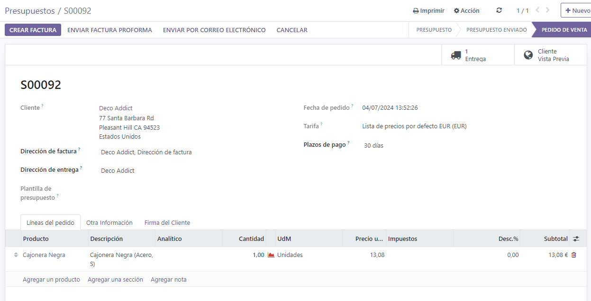Ya que se confirmó la orden de venta, es momento de crear un gasto.
Para hacerlo, vaya a la aplicación Gastos desde el tablero principal de Odoo.
Después, desde el tablero de Gastos, haga clic en Nuevo para mostrar un formulario de gastos en blanco.
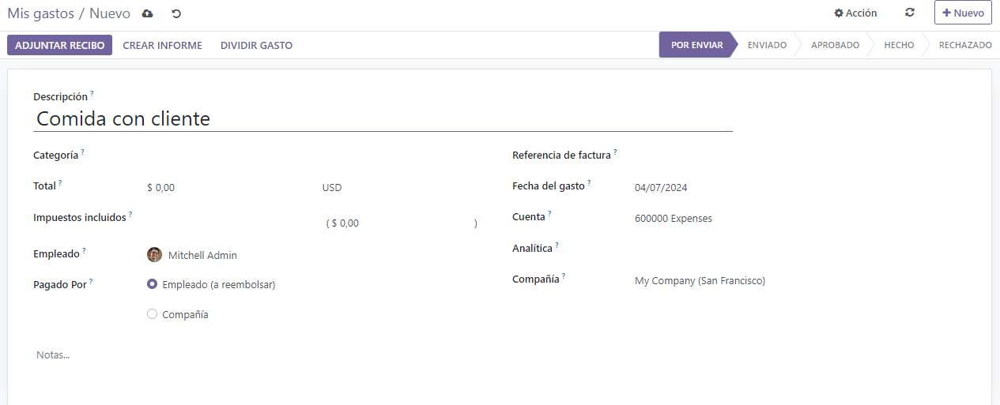En el formulario de gastos, agregue una Descripción para referenciar el gasto con facilidad.
Después, en el campo Categoría, seleccione una de las siguientes opciones del menú desplegable:
Comunicación: cualquier tipo de comunicación relacionada al proyecto o la orden.
Otros: gastos que no entran en ninguna de las otras categorías.
Comidas: cualquier gasto en comida relacionado a un proyecto u orden.
Regalos: cualquier gasto de regalo relacionado al proyecto o la orden.
Kilometraje: cualquier tipo de gasto en kilometraje (gasolina) relacionado a un proyecto u orden.
Viáticos: cualquier tipo de gastos relacionados a viajes u hospedaje relacionados al proyecto o la orden.
Truco
Puede crear nuevas categorías de gastos desde un formulario de gastos, solo tiene que hacer clic en el menú desplegable del campo de Categoría, seleccione Ver todo y haga clic en Nuevo en la ventana emergente Buscar:Categoría.
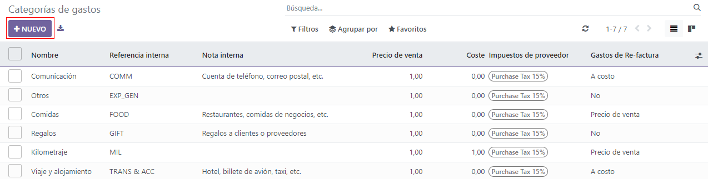Para este flujo de trabajo de ejemplo volveremos a facturar a un cliente por una estancia corta en un hotel, la categoría que usaremos para este ejemplo es Viáticos.
Nota
El siguiente ejemplo requiere que se instalen las aplicaciones Ventas, Contabilidad y Gastos para ver o modificar todos los campos mencionados en el flujo de trabajo.
En el campo Categoría ingrese la cantidad que se meterá a gastos en el campo Total.
Ahora, designe si hay impuestos incluidos en el Total. Si selecciona una cantidad de impuestos preconfigurada en el campo impuestos incluidos, Odoo calcula la cantidad de impuestos de manera automática según la cantidad ingresada en el campo Total.
Después, seleccione qué Empleado fue el responsable de los gastos y seleccione una opción en el campo Pagado por, ya sea Empleado (por reembolsar) o Empresa.
En este caso, el empleado pagará el hotel con su propio dinero, por lo que seleccionaremos la opción Empleado (por reembolsar).
En el lado derecho del formulario de gastos, tendrá la opción para agregar una Factura de referencia. Debajo de eso, podrá ver los campos Fecha del gasto y Cuenta, los cuales se llenan de manera automática.
Nota
Si lo necesita, es posible modificar los campos Fecha del gasto y Cuenta si lo desea.
Después, seleccione el campo Cliente al que se le va a volver a facturar para ver un menú desplegable desde el cual podrá seleccionar una orden de ventas apropiada a la que se debe de adjuntar este gasto. Debe llenar este campo para poder facturarle el gasto al cliente.
Finalmente, tendrá la opción de modificar los campos Distribución analítica y Empresa. Estos campos no son necesarios para terminar de facturarle un gasto al cliente, pero igual los puede modificar si así lo desea.
Al final del formulario de gastos hay una sección de Notas… en la que puede agregar cualquier nota relacionada a este gasto si así lo necesita.
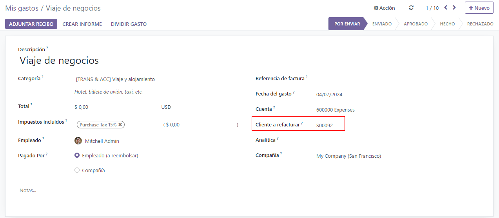En la parte superior del formulario de gastos hay botones para Adjuntar recibo, Crear reporte y Dividir gastos.
Si hay un recibo físico o digital que se debe adjuntar a este gasto, haga clic en Adjuntar recibo.
Si es necesario dividir el costo del recibo, haga clic en Dividir gasto. Puede usar esta función para varias cosas, como dividir los gastos con otro empleado, ajustar diferentes tasas de impuestos, etc.
Si ninguna de estas opciones son necesarias, haha clic en Crear reporte para bloquear el reporte de gastos que acaba de configurar.
Así se mostrará un Resumen del reporte de gastos para el gasto nuevo.
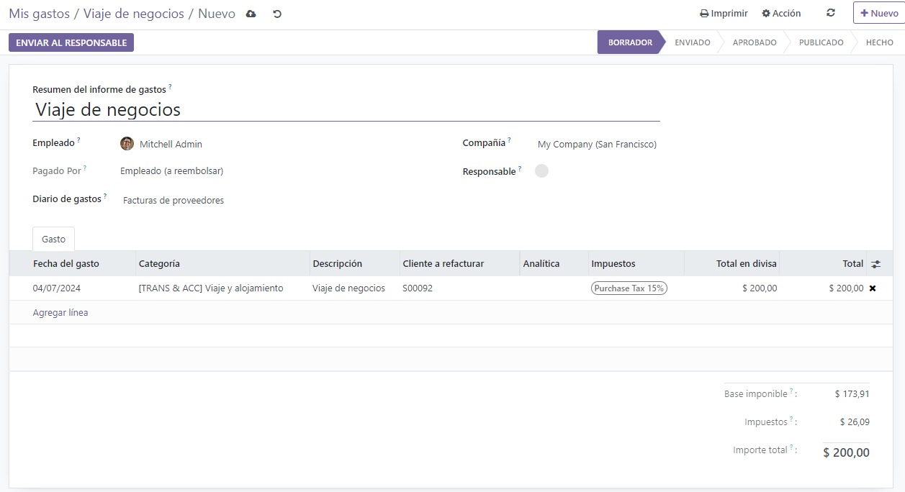Ya que confirmó los detalles relacionados al gasto, haga clic en Enviar al gerente. Así el reporte de gastos se enviará al gerente para que lo revise y lo apruebe.
El gerente a cargo de revisar y aprobar el gasto verá los detalles relacionados al gasto y, si no hay problemas, hará clic en el botón Aprobar, el cual solo aparece en la vista del gerente en el Resumen del reporte de gastos que el empleado le envió al gerente.
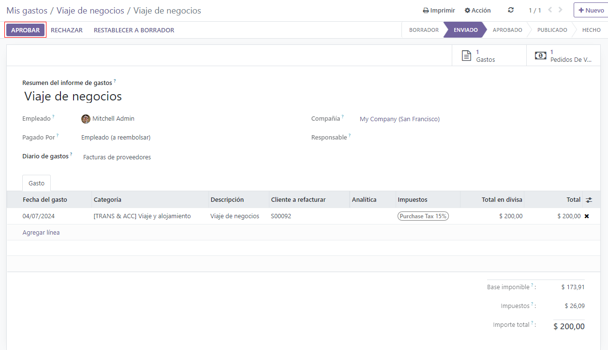Una vez que lo apruebe, los botones en la parte superior del Resumen de reporte de gastos volverán a cambiar. Ahora los botones son Publicar asientos de diario, Reportar en el siguiente recibo de nómina, Rechazar y Restablecer a borrador.
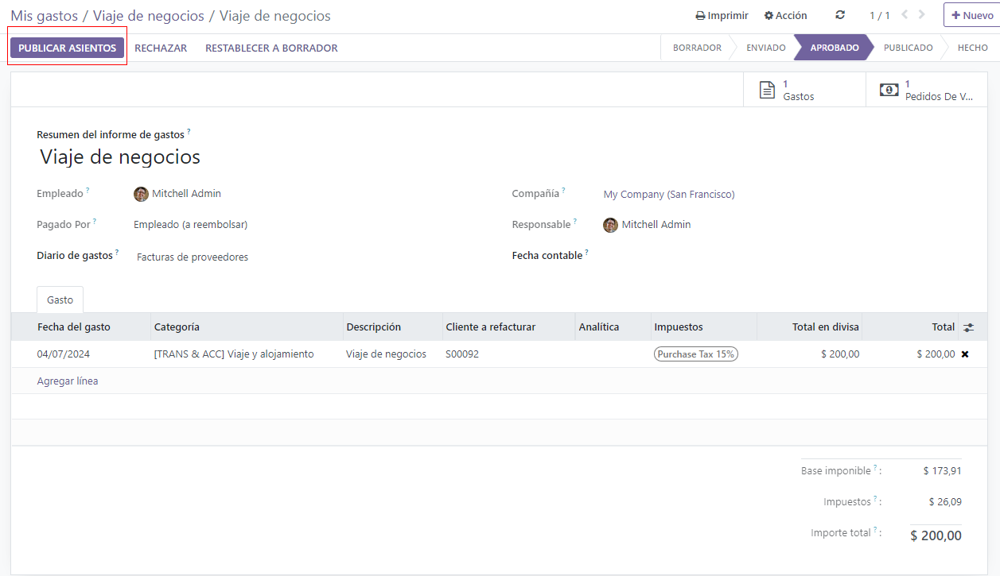Cuando el gerente esté satisfecho con el Resumen de reporte de gastos, hará clic en Publicar asientos de diario.
Al hacer clic en Publicar asientos de diario, el botón desaparecerá y la columna Distribución analítica en la pestaña Gasto se llenará con la orden de venta que se configuró al inicio en el campo Cliente al que se le volverá a facturar del gasto.
Volver a facturar gastos¶
Una vez completados estos pasos, es momento de regresar a la orden de venta para terminar de volver a facturar al cliente.
Para hacer eso, vaya al , y seleccione la orden de venta correspondiente que se debe volver a facturar por el gasto.
En el formulario de ventas, el gasto recién configurado ahora se encuentra en la pestaña líneas de la orden, con la columna entregado completada y listo para ser facturado.
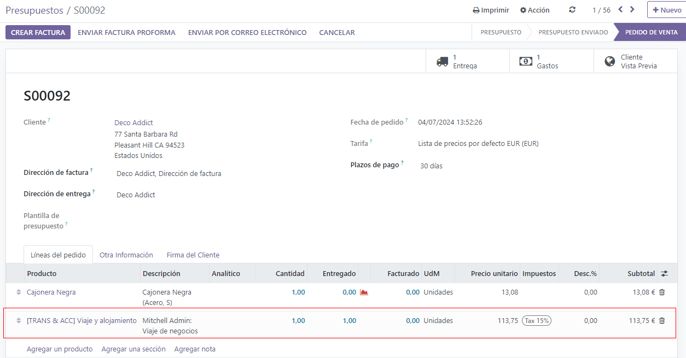Después de confirmar los detalles del gasto, haga clic en crear factura en la parte superior de la orden de venta. Cuando haga clic, aparecerá una ventana emergente de crear factura.
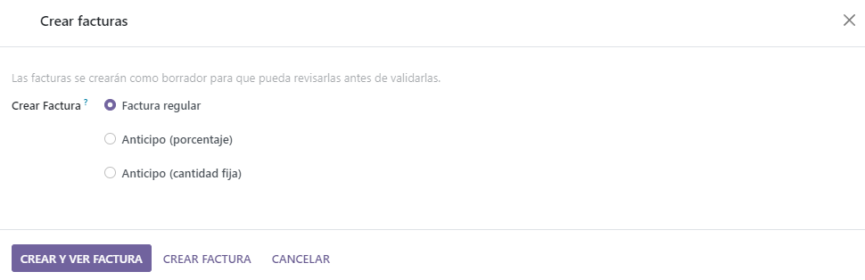Desde esta ventana emergente, deje el campo crear factura en la opción predeterminada de factura regular y haga clic en crear borrador de factura.
Haciendo esto se revela un borrador de factura del cliente que muestra solo el gasto en la pestaña líneas de factura.
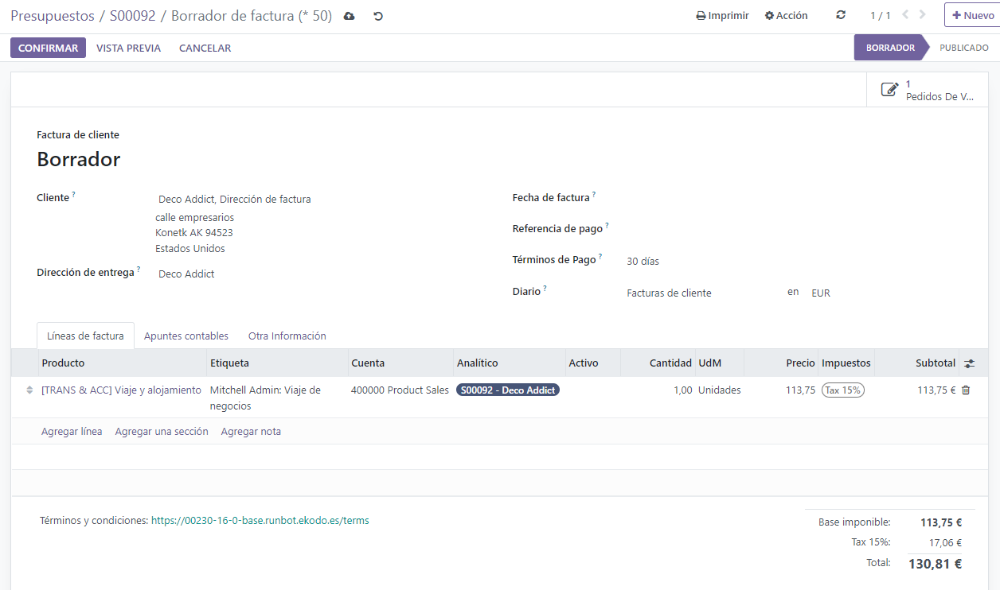Si toda la información relacionada con el gasto es correcta, haga clic en confirmar para confirmar la factura. Al hacerlo, se cambiará el estado de la factura de borrador a registrado.
Si desea enviar la factura al cliente, haga clic en enviar e imprimir. Al hacerlo, se mostrará la ventana emergente Enviar, con un mensaje preconfigurado y la factura en formato PDF en el cuerpo del mensaje. Puede revisar y modificar el mensaje si es necesario.
Una vez listo, haga clic en enviar e imprimir para enviar la factura al cliente. Cuando haga clic, la ventana emergente desaparecerá y Odoo enviará el mensaje/factura al cliente. Además, se descargará automáticamente un PDF de la factura con fines de registro y/o impresión.
Vuelva a la factura del cliente y haga clic en el botón registrar pago cuando el cliente pague el gasto facturado.
Si hace clic en registrar pago, aparecerá la ventana emergente registrar pago. En esta ventana emergente, los campos necesarios se autocompletarán con la información correcta. Después de revisar la información, haga clic en crear pago.
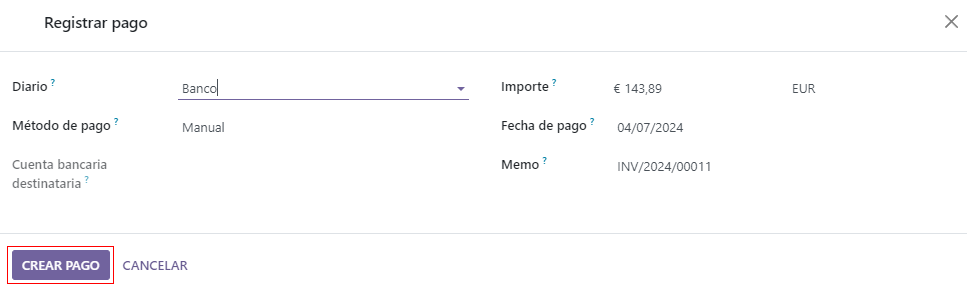Una vez que se hace clic en crear pago, la ventana emergente desaparecerá y aparecerá un listón verde con la leyenda en proceso de pago en la esquina superior derecha de la factura, lo que indica que esta factura está pagada en su totalidad. De esta manera, se completa el flujo de trabajo.
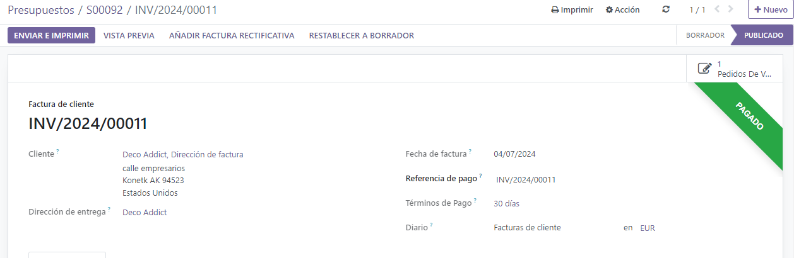